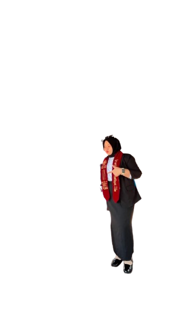

PORTOFOLIO

Lulusan S1 Teknik Informatika, Universitas Pamulang (Lulus 2026 | IPK 3,60)
Qinanthi Patricia Amithayani, S.Kom.
Download CV (PDF)
Bagian 2 • Skills & Tools Matrix
Keahlian & Aplikasi yang Digunakan
Bagian 3 • Work Experience
Pengalaman Pekerjaan
Bagian 4 • Selected Projects
Contoh Project
Bagian 5 • Credentials & Gallery
Sertifikasi
Buka PDF
Tutup